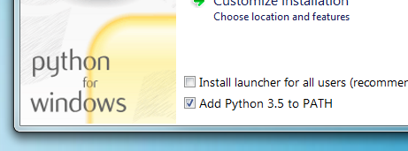

MkDocs
MkDocs is a static site generator that provides a simplistic way for generating documentation written in markdown. MkDocs alone has a rich feature set of plugins and themes that will handle your documentation needs. However, the user community has contributed vastly to this project and added additional packages that can be installed to improve upon MkDocs. One of the most highly used packages is Material for MkDocs.
Python Install
MkDocs requires Python and the Python package manager (pip) installed on your system. Newer installs of Python will include the package manager.
After install check installation of Python from the command line
$ python --version
Python 3.12.3
$ pip --version
pip 24.0 from C:..user\Local\Programs\Python\Python312\Lib\site-packages\pip (python 3.12)
Note
For Windows install of Python be sure to check the box to add Python to your PATH
(It's normally off by default)

MkDocs / Material for MkDocs Install
Material for MkDocs
This will automatically install these dependencies: MkDocs, Markdown, Pygments and Python Markdown Extensions.
MkDocs
This will install MkDocs only.
Install MkDocs package using pip:
After install check installation of MkDocs from the command line
Creating a New Project
Open command line and navigate to the location where the project will be stored. To create a new MkDocs project, run the following command from the command line.
Then use the cd command to change directories to the newly created MkDocs directory.
Tip
In the example above the new MkDocs project was called 'my-project' but any name can be used for the new project name.
Python Virtual Environment
Python 3 has a built-in virtual environment that will isolate project packages from other projects on your system. It is recommended to activate the virtual environment each time you open a Python project to work on it. The virtual environment will cease each time you close the shell or IDE from which you activated from.
Note
The command lines below are executed while inside your Python project directory
Note
Reactivate an existing virtual environment by following the same instructions to activate. There is no need to create a new virtual environment.
Project layout
mkdocs.yml # The configuration file.
docs/
index.md # The documentation homepage.
... # Other markdown pages, images and other files.
Build Site
Before deploying the MkDocs project to the web, you must first build the documentation.
This will create a new directory in your project called site. To view the content of the directory.
Tutorial
The documentation above is outlined very well by @james-willett in this YouTube video
How to setup Material for MkDocs by @james-willett